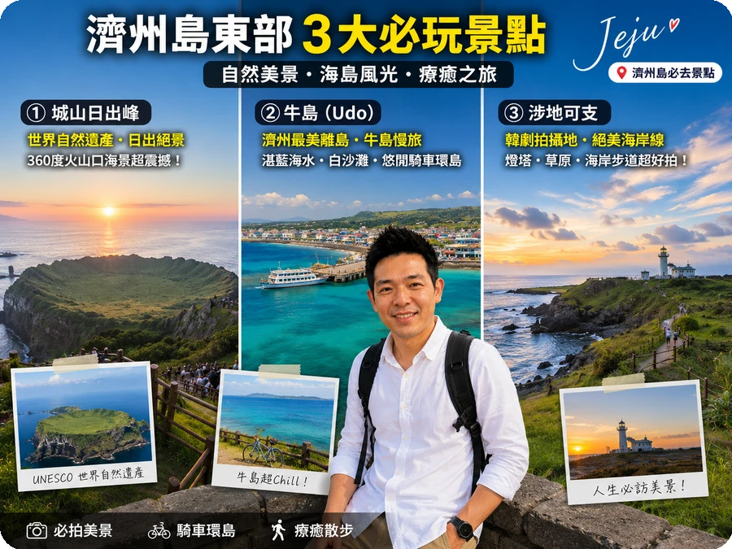
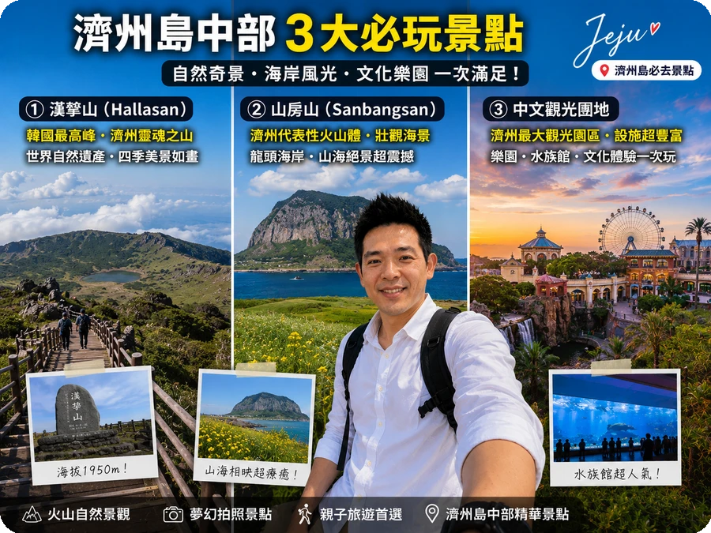
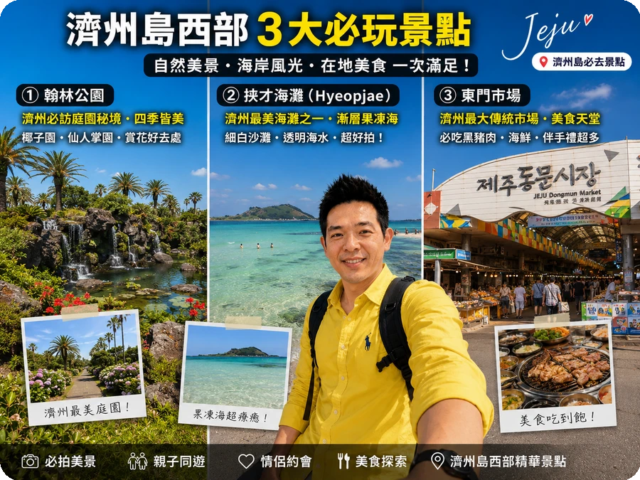

🚗 濟州租車與駕照
濟州島大眾運輸班次少，自駕是最有效率的方式。環島一圈約200公里，3天可從容走完。
- 駕照：台灣駕照需韓文公證譯本，可在外交部或駐台北韓國代表部辦理。需時約3-5個工作天，建議出發前2週辦理。
- 租車比價：推薦 LOTTE Rent-a-Car 或 SK Rent-a-Car，3天約 ₩150,000-250,000。Klook 預訂比現場便宜15-20%。
- 保險：加購專用保險（전담보），約 ₩15,000/天。建議加保，濟州有很多窄路和單行道。
- 導航：用 KakaoMap 或 Naver Map，輸入電話號碼導航最準。Google Map 在韓國不太準。
- 加油：還車前加滿油，自助加油可刷卡。濟州油價比台灣便宜約20%。
- 停車：大部分景點都有免費停車場，飯店也附停車位。市區停車費約 ₩1,000/小時。
💡 省錢秘訣：濟州機場取車最方便，提前在 Klook 預訂比現場便宜15-20%。秋季和冬季是淡季，租車價格更低。
🗓️ 3天2夜環島行程
Day 1
東部：城山日出峰 → 牛島 → 涉地可支
- 早上 城山日出峰（門票 ₩2,000），30分鐘登頂看火山口全景
- 從城山港搭渡輪到 牛島（15分鐘，₩3,500來回）
- 牛島租電動車環島（需國際駕照），2-3小時逛完
- 下午回本島，前往 涉地可支，燈塔與草原的絕美海岸
- 晚餐：城山附近 黑豬肉烤肉，一人大約 ₩15,000-20,000

🌅 小編實地心得：城山日出峰的日出真的值得早起！建議早上5點前到，人少景美。牛島的電動車環島很愜意，海岸線一路湛藍到天邊。
💡 提示：城山日出峰如果想看日出，需早上5點前到。一般遊客早上9-10點去即可，天氣好時視野超棒。
Day 2
中部：漢拏山 → 山房山 → 中文觀光團地
- 早上挑戰 漢拏山（韓國最高峰1,947m），城板岳路線來回約5-6小時。需提前在官網預約。
- 不想爬山可選 御里牧路線，較輕鬆來回3-4小時。適合一般體力的人。
- 下午前往 山房山，海岸懸崖與龍頭岩的壯麗景色。這裡有山房山溶洞（₩2,000）。
- 傍晚到 中文觀光團地，泰迪熊博物館 + 天帝淵瀑布。下午4點後光線最美。
- 晚餐：西歸浦 海鮮鍋（해물탕），新鮮鮑魚、海螺、螃蟹一鍋煮。2人份 ₩30,000-40,000。

⛰️ 小編實地心得：漢拏山城板岳路線比想像中耗體力，來回近5小時。山頂雲霧繚繞像仙境，強烈建議帶防風外套和足夠的水。下山後腿會抖兩天。
💡 提示：漢拏山冬季（12-2月）部分路線封閉，出發前請查官網。夏天去要帶足夠水，山上沒有商店。
Day 3
西部：翰林公園 → 挾才海灘 → 東門市場 → 回程
- 早上 翰林公園（門票 ₩10,000），亞熱帶植物園與仙人掌溫室
- 旁邊 挾才海灘，濟州最美的白沙灘，夏季可游泳
- 中午前往 涯月 海邊咖啡廳，紅色燈塔與玻璃屋超好拍
- 下午回濟州市區 東門市場 買伴手禮（柑橘、海苔、巧克力）
- 還車後搭機回台（或飛回首爾轉機）

🌊 小編實地心得：涯月海邊的日落是整趟濟州之旅最美的一刻！紅色燈塔+玻璃屋咖啡廳+海天一線，隨手拍都是IG打卡照。建議下午4點後到，光線最溫柔。
💰 3天2夜預算參考
| 項目 | 預算 (NT$) |
|---|
| 來回機票（廉航首爾轉機） | 5,000-8,000 |
| 租車3天 | 4,000-6,500 |
| 住宿2晚 | 4,000-8,000 |
| 油資 | 1,500 |
| 餐食3天 | 4,000 |
| 門票+渡輪 | 1,000 |
| 合計 | 19,500-29,000 |
🍽️ 濟州必吃5大美食
- 黑豬肉烤肉（흑돼지）：濟州特產，肉質Q彈無腥味，一人 ₩15,000-25,000
- 鮑魚粥（전복죽）：整顆鮑魚入粥，鮮甜養胃，一碗 ₩12,000-15,000
- 漢拏峰柑橘（한라봉）：濟州特有品種，甜度超高，路邊攤 ₩3,000/袋
- 海鮮鍋（해물탕）：鮑魚、海螺、螃蟹、大蝦一鍋煮，2人份 ₩30,000-40,000
- Osulloc 綠茶甜點：濟州綠茶園品牌，抹茶捲蛋糕和冰淇淋必點
💡 小編真心話：濟州自駕真的很自由，但冬天路結冰要特別小心。建議避開十二月底到二月初的雪季開車，如果非去不可，租車時務必確認有雪胎。另外涯月海邊的日落是整趟旅程最美的一刻，千萬別趕路錯過。
💡 小編額外提醒：濟州島的景點之間距離比想像中遠，不要想一天跑太多地方。建議東部一天、中部一天、西部一天，這樣行程不會太趕。另外濟州的咖啡廳文化超發達，海邊咖啡廳的視野真的無敵，留點時間給咖啡廳發呆很重要。
💡 小編真心話：濟州島自駕比你想的簡單！租車建議在抵達機場後直接取車，機場有很多租車公司選擇。島上沒有高速公路收費站，全程免費行駛，但要注意濟州限速嚴格，城山日出峰附近有區間測速，千萬不要超速。租車時建議加購免責保險，島上石頭多、停車場空間窄，小擦碰難免。另外，濟州島星期一行駛高速公路（二類道路）部分路段有管制，建議避開下午離峰的時間。
❓ 常見問題
濟州島租車需要國際駕照嗎？
台灣駕照需要附上韓文公證譯本，可在台灣外交部或駐台北韓國代表部辦理。部分租車公司如LOTTE接受台灣駕照+英文公證，建議出發前確認。
濟州島3天2夜夠嗎？
3天2夜可走完主要景點（城山日出峰、牛島、漢拏山擇一），但會比較趕。建議4天3夜比較充裕，可以加上南部中文觀光團地和西歸浦。
濟州島什麼季節去最好？
春季（4月）油菜花盛開、夏季（7-8月）海灘戲水、秋季（10月）芒草與紅葉、冬季（12-2月）漢拏山雪景。秋季氣候最舒適，是旅遊旺季。
濟州島必吃美食？
黑豬肉烤肉（흑돼지）、鮑魚粥（전복죽）、柑橘（한라봉）、海鮮鍋（해물탕）、綠茶甜點（오설록）。黑豬肉一人大約 ₩15,000-25,000。
牛島怎麼去？
從城山港搭渡輪約15分鐘到牛島，船票來回 ₩3,500。島上租電動車（需國際駕照）或腳踏車，繞島一圈約2-3小時。渡輪每30分鐘一班。